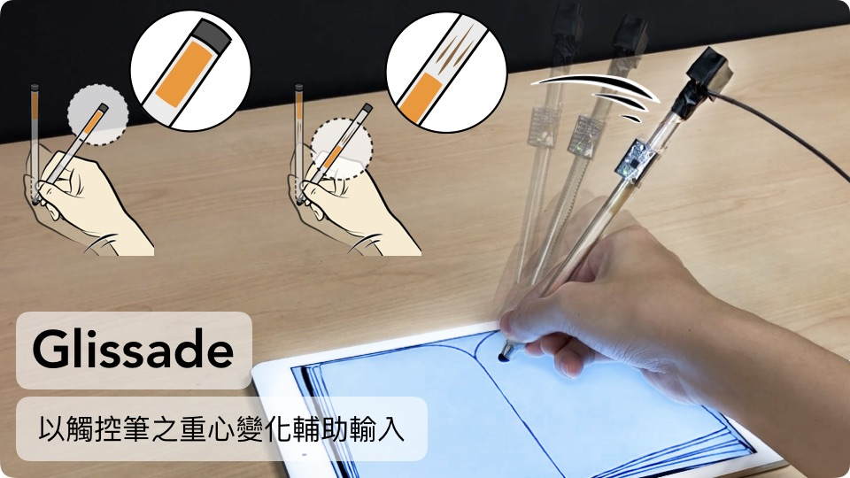

Glissade
Generating Balance Shifting Feedback to Facilitate Auxiliary Digital Pen Input.
How I participated:
I designed graphics and made the prototype needed for the project. I rendered the CAD with keyshot, used 3D printing to build parts, and assembled them into a working prototype. I cooperated with members from computer science and electrical engineering to finish this project.
To complete Glissade, we first validated the usability of this feedback by determining the recognizability of six balance patterns. Then, we demonstrate a set of novel interactions enabled by Glissade and discuss the directions for future research. Glissade has been lately applied to smart healthcare solution, as the digital pen will play as a scalpel in AR environment to facilitate surgical education.
Timeline: 4 monthsThis paper introduces Glissade, a digital pen that generates balance shifting feedback by changing the weight distribution of the pen. A pulley system shifts a brass mass inside the pen to change the pen’s center of mass and moment of inertia. When the mass is stationary, the pen delivers a constant yet natural sensation of weight, which can be used to convey a status. The pen can also generate a variety of haptic clues by actuating the mass according to the tilt or rotation of the pen, two commonly-used auxiliary pen input channels.
Glissade demonstrates new possibilities that balance shifting feedback can bring to digital pen interactions. We validated the usability of this feedback by determining the recognizability of six balance patterns –a mix of static and dynamic patterns chosen based on our design considerations – in two controlled experiments. The results show that, on average, the participants could distinguish between the patterns with a 94.25% accuracy. At the end, we demonstrate a set of novel interactions enabled by Glissade and discuss the directions for future research.
Two auxiliary pen input methods are examined: the actions of pen tilting (altitude) and pen rotating (azimuth).
The Glissade prototype: The entirety of the prototype is made opaque by wrapping black tape around it. As illustrated, Glissade comprises a conductive pen tip, a cylindrical pen body, a belt and pulley system, a rotary encoder, an inertial measurement unit (IMU), and a controller that is connected to the pen via wires. The motor on Glissade drives the belt and pulley system to actuate the balance-shifting mechanism, and the controller processes measurements from the rotary encoder and IMU, communicates with a computer, and regulates the rotation of the motor.
To demonstrate the capabilities of Glissade, we designed various balance patterns that can be used in applications. Six patterns were implemented, including three static patterns: Front Heavy (FH), Balanced (B), Back Heavy (BH), and three dynamic patterns: Shift Towards the Back (STB), Shift Towards the Front (STF), and Balance Oscillation (BO).
We demonstrate a range of possible scenarios when coupling haptic feedback with pen orientation. At the same time, we illustrate a few new interactions made possible by the application of balance shifting feedback on digital pens.